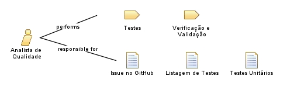

| Role: Analista de Qualidade |
|
|
Relationships
 |
||
| Categories | ||
|---|---|---|
| Primary Performs | ||
Main Description
Responsável pela padronização de procedimentos e artefatos, assim como o planejamento e realização de testes de desempenho, usabilidade e funcionais. Deve se atentar à criação de issues no GitHub que dizem respeito aos testes realizados nos produtos das sprints de refinamento e desenvolvimento. |